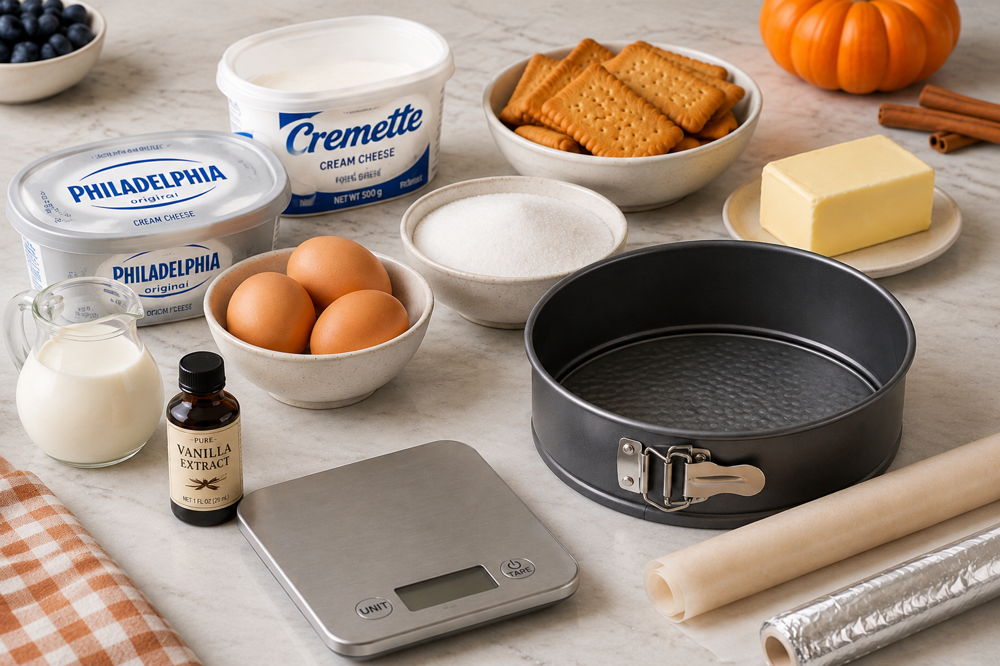
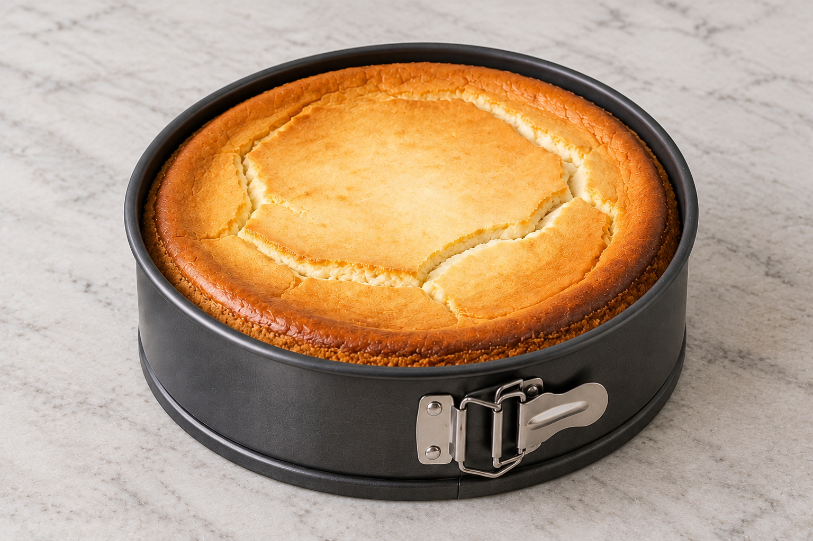

Рецепты
Готовим дома: пошаговые инструкции, проверенные пропорции и советы.
Основы: без чего не получится
Чизкейк — десерт из сливочного сыра
на песочной основе.
Главное — не перепечь и
использовать сыр комнатной температуры.

Базовые ингредиенты
- Сливочный сыр — 600 г
- Песочное печенье — 200 г
- Сливочное масло — 100 г
- Сахар — 150 г
- Яйца — 3 шт
- Сливки 33% — 150 мл
- Ванильный экстракт — 1 ч. л.
Инструменты
- Форма разъёмная 20 см
- Миксер или блендер
- Насадка «лопатка» — для сыра
- Насадка «венчик» — для сливок
- Пергамент или фольга
- Кухонные весы
Чизкейк Нью-Йорк
Классический рецепт с плотной сливочной текстурой и
трещинками сверху, как положено.

Пошагово
- Печенье измельчить в крошку, смешать с растопленным маслом.
- Утрамбовать в форму, поставить в холодильник на 30 минут.
- Сыр комнатной температуры взбить с сахаром до гладкости.
- По одному добавить яйца, не переставая взбивать.
- Влить сливки, добавить ваниль, перемешать лопаткой.
- Вылить массу на основу, разровнять.
- Выпекать при 160 °C около 60 минут.
- Остудить в выключенной духовке 1 час, затем — в холодильнике 4 часа.
Что можно добавить
- Ягодный соус
- Малина
- Смородина
- Черника
- Шоколадный ганаш сверху
- Карамель и морская соль
Советы и частые ошибки
- Не застыл — мало времени в холодильнике. Минимум 4 часа, лучше — ночь.
- Комки в массе — сыр был холодным. Дайте ему полежать 2 часа при комнатной температуре.
- Основа крошится — мало масла. Добавьте ещё 20 г.
Сравнение рецептов
Какой чизкейк выбрать для готовки |
||||
| Фото | Рецепт | Сложность | Время | Подробнее |
|---|---|---|---|---|

|
Нью-Йорк |
Просто |
1,5 часа + охлаждение |
К рецепту |

|
Лаванда |
Сложно |
4 часа + охлаждение |
В каталоге |

|
Черничный |
Средне |
2 часа + охлаждение |
В каталоге |